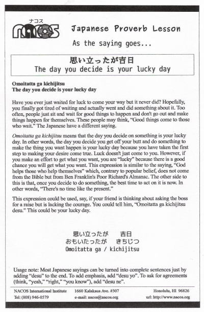

Omoitatta ga kichijitsu
The day you decide is your lucky day
Have you ever just waited for luck to come your way but it never did? Hopefully, you finally got tired of waiting and actually went and did something about it. Too often, people just sit and wait for good things to happen and don't go out and make things happen for themselves. These people may think, “Good things come to those who wait.” The Japanese have a different saying.
Omoitatta ga kichijitsu means that the day you decide on something is your lucky day. In other words, the day you decide you get off your butt and do something to make the thing you want happen is your lucky day because you have taken the first step to making your desire come true. Luck doesn't just come to you. However, if you make an effort to get what you want, you are “lucky” because there is a good chance you will get what you want. This expression is similar to the saying, “God helps those who help themselves” which, contrary to popular belief, does not come from the Bible but from Ben Franklin's Poor Richard's Almanac. The other side to this is that, once you decide to do something, the best time to act on it is now. In other words, “There's no time like the present.”
This expression could be used, say, if your friend is thinking about asking the boss for a raise but is lacking the courage. You could tell him, “Omoitatta ga kichijitsu desu.” This could be your lucky day.
Usage note: Most Japanese sayings can be turned into complete sentences just by adding “desu” to the end. To add emphasis, add “desu yo”. To ask for agreements (think, “yeah,” “right,” “you know”), add “desu ne”.

| © 1995-2013 NACOS International Institute. All Rights Reserved. |